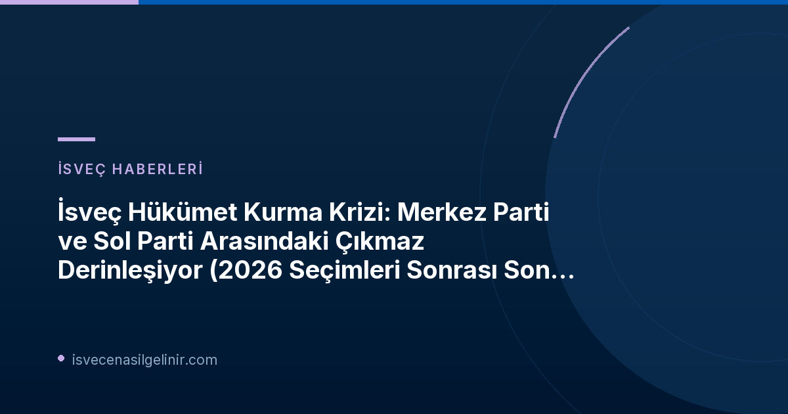

İsveç'te Hükümet Kurma Süreci Neden Çıkmaza Girdi?
2026 genel seçimlerinin ardından İsveç'te siyasi arenada sular durulmuyor. Riksdag Başkanı Andreas Norlén, yeni bir hükümetin kurulması için parti liderleriyle yoğun görüşmeler yaparken, Merkez Parti (C) ve Sol Parti (V) arasındaki uzlaşmazlık, sürecin ana çıkmazını oluşturuyor. Bugün (18 Eylül) yapılan açıklamalara göre, bu iki parti, hükümet işbirliği konusunda birbirine kilitlenmiş durumda ve mevcut pozisyonlarından geri adım atmıyorlar.
Merkez Parti (C) ve Sol Parti (V) Liderlerinden Sert Açıklamalar
Elisabeth Thand Rinqvist (C): "Sol Parti ile Hükümette Olmayız"
Merkez Parti lideri Elisabeth Thand Rinqvist, Riksdag Başkanı ile yaptığı görüşme sonrasında partilerinin net duruşunu yineledi. Rinqvist, "Sol Parti ile bir hükümette yer alacağımızı göremiyoruz," ifadeleriyle Sol Parti ile herhangi bir koalisyon ihtimalini kesin bir dille reddetti. Ancak Merkez Parti, Sosyal Demokratlar (S) ve Yeşiller Partisi (Miljöpartiet - MP) ile Hükümette yer alma veya işbirliği yapma konusunda daha esnek bir yaklaşım sergiliyor. Thand Rinqvist, Sol Parti ile "örgütlü bir işbirliği" seçeneğinin de masada olmadığını belirterek, Merkez Parti'nin "ortada demir atmış bir hükümet" vizyonunu savundu. Hükümetin tam olarak nasıl bir görünüme sahip olacağının ise val sonucu ve sonraki adımlarla belirleneceğini ekledi.
Nooshi Dadgostar (V): "Merkez Parti'nin Tutumu Akıl Dışı ve Sesimizi Kısma Çabası"
Sol Parti lideri Nooshi Dadgostar ise Merkez Parti'nin yaklaşımını sert bir dille eleştirdi. Dadgostar, "Bu, Merkez Parti'nin akıl dışı bir pozisyonu," diyerek Merkez Parti'nin Sol Parti'nin sesini kısmaya çalıştığını belirtti. Sol Parti'nin oy oranının Merkez Parti'den çok daha yüksek olduğunu ve seçmenlerin kendilerini temsil etmeleri için Vänsterpartiet'i seçtiğini vurguladı. Dadgostar, partilerinin yalnızca içinde yer alacağı bir hükümete oy vereceğini yineleyerek net bir kırmızı çizgi çekti. Merkez Parti'nin uzlaşmaz tavrını sürdürmesi halinde, Sosyal Demokratlar (S), Sol Parti (V) ve Yeşiller (MP) arasında Merkez Parti olmaksızın hükümet müzakerelerine başlanabileceği sinyalini de verdi.
Diğer Partilerden Gelen Tepkiler ve Daha Geniş Siyasi Resim
İsveç siyasetindeki bu kilitlenme sadece C ve V arasında değil, diğer partilerde de yankı buluyor. İsveç Demokratları (Sverigedemokraterna - SD) lideri Jimmie Åkesson, Sol Parti ve Sosyal Demokratlar'ı "İslamcı seçmenleri mobilize etmekle" suçlayarak tartışmaya yeni bir boyut kattı. Öte yandan, Sosyal Demokratlar, "yeni bir işbirliği dönemi" çağrısı yaparak diğer partileri "kartel toplantısı" olarak adlandırdığı görüşmelere davet etti. Eski Başbakan Ulf Kristersson'un (Ilımlı Parti) istifasıyla başlayan bu belirsizlik süreci, İsveç siyasetinin şimdiye kadarki en zorlu dönemlerinden birine işaret ediyor.
Siyasi Çıkmazın Temel Noktaları
- Merkez Parti (C): Sol Parti (V) ile hükümette yer almayı reddediyor. Sosyal Demokratlar (S) ve Yeşiller (MP) ile işbirliğine açık.
- Sol Parti (V): Yalnızca kendisinin de içinde yer aldığı bir hükümete destek vereceğini belirtiyor. Merkez Parti'nin tutumunu eleştiriyor ve C olmadan S-V-MP koalisyonunu düşünüyor.
- Riksdag Başkanı Andreas Norlén: Hükümet kurma görevini kime vereceğine karar vermek için parti liderleriyle görüşüyor.
Sırada Ne Var? Erken Seçim İhtimali mi?
Hükümet kurma süreci tıkandıkça erken seçim ihtimali de gündeme geliyor. Ancak Merkez Parti lideri Thand Rinqvist, erken seçimi "bir başarısızlık" olarak gördüğünü belirtiyor. Mevcut durumda hiçbir partinin tek başına veya bilinen bloklar halinde net bir çoğunluğa ulaşamaması, siyasi partileri daha önce denenmemiş işbirliği modelleri aramaya itiyor. Bu siyasi belirsizlik, ülkedeki genel istikrarı etkilemekle kalmıyor, aynı zamanda uzun vadede İsveç'e yerleşmeyi düşünen bireylerin ve mevcut göçmenlerin geleceğine dair de soru işaretleri yaratıyor. İsveç sistemi ve beklentileri hakkında detaylı bilgi edinmek isteyenler için sverigemedborgarskapsprov.com adresini ziyaret etmek faydalı olacaktır.
Referanslar:
- SVT Nyheter Inrikes: Låst mellan C och V inför regeringsförhandlingar
İsveç Siyasetindeki Gelişmeleri Takip Edin
İsveç'te hükümet kurma sürecine dair en güncel haberleri ve analizleri kaçırmayın. Ülkedeki siyasi istikrarın hem vatandaşlar hem de yeni göçmenler için taşıdığı önemi göz önünde bulundurarak, gelecekteki olası senaryolar hakkında bilgi edinin.